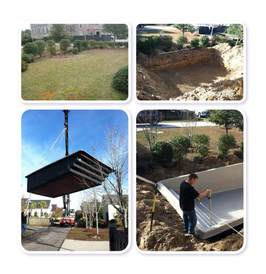

Whether you are building the perfect play place for the little ones in your life, or looking for a spa to help you relax, Alaglas has just what you are looking for. These pools are great on their own, but they really shine when you pair them with one of our featured pools. The possibilities are endless, so take your time, and look at each pool and all the accessories you can pair them with. We make it easier than ever to build your backyard oasis; all you need to do is give us a call, and we can get started today.
Accesories
Alaglas Fiberglass Pools offers many accessories and features that will take your pool experience to a whole new level. Whether it is a stylish mosaic or a beautiful waterfall feature, Alaglas gives you the ability to make your pool just as unique as you are.

Construction
Because all Alaglas Pools are designed and built in our state of the art facility and delivered ready to be installed in your yard, the installation process is the shortest of any type of in ground pool.
When you select your new Alaglas Pool, we realize you are making a very important addition to your home. We also understand the need to preserve the environment and aesthetics around the installation area. The structural strength of an Alaglas Pool permits installation in most areas, even with limited space and access to your yard.